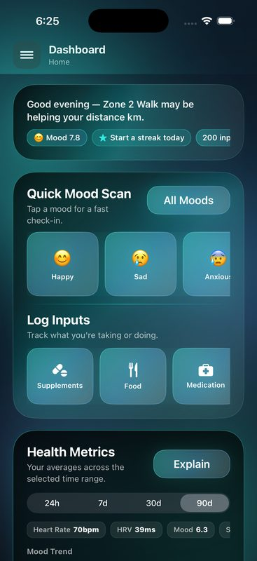
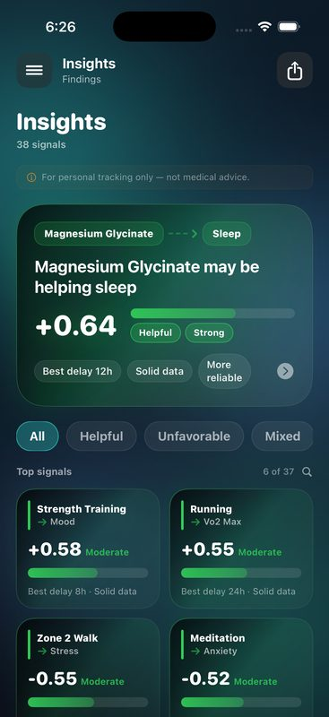

Track What Drives Your Inflammation. Find Your Relief.
Chronic inflammation is different for everyone. The foods, stress levels, sleep patterns, and activities that trigger flare-ups in one person might have no effect on another. ReactLog helps you log joint pain, swelling, morning stiffness, skin flare-ups, and fatigue alongside diet, exercise, sleep, and stress to identify exactly what drives your inflammation—then what calms it down.

You're Living in the Dark About Your Inflammation Triggers
If you have chronic inflammation, you've lived this: you have a flare-up—joint pain, swelling, stiffness, fatigue, or skin issues—and you have no idea why. Was it something you ate? Was it the stress from last week catching up with you? Did you not sleep enough? Did you overdo exercise?
The problem is that inflammation doesn't happen instantly. You might eat wheat on Tuesday, and joint pain emerges on Thursday. You might have poor sleep on Monday, and swelling peaks Wednesday. The delayed reaction makes the connection nearly impossible to spot without data. You're left guessing, avoiding random foods, and managing flare-ups reactively instead of preventing them.
You end up eliminating entire food groups—dairy, gluten, nightshades, additives—not knowing which actually trigger your inflammation and which you're avoiding unnecessarily. You restrict your life based on hope and hunches, not evidence. Worse, you might be missing the real triggers while chasing the wrong ones.
The solution is systematic tracking. Log what you eat, how much you sleep, your stress levels, your exercise, and your inflammation symptoms. After 2-3 weeks of consistent data, patterns emerge. You discover which foods correlate with flare-ups. You see how sleep directly impacts inflammation. You spot the stress-inflammation connection. Suddenly, you have actionable insight into what drives your inflammation and what calms it down.

How It Works in 3 Steps
Transform inflammation management from guessing to evidence-based decisions.
Log Your Symptoms
Each morning and evening, rate your inflammation symptoms: joint pain, swelling, stiffness, skin flare-ups, and fatigue. Use simple sliders and predefined severity scales. Add notes about what triggered the flare-up if you already know. It takes 60 seconds.
Track Your Triggers
Log everything that might affect inflammation: every meal you eat, exercise you do, hours of sleep, stress level, and any environmental changes. ReactLog makes data entry frictionless—quick entries, not tedious forms. The more comprehensive your tracking, the clearer your patterns become.
Discover Your Patterns
After 2-3 weeks of consistent logging, ReactLog's on-device analytics surface patterns: "Your joint pain is 40% higher on days you eat wheat plus have sleep below 6 hours." You see which foods correlate with flare-ups and which lifestyle factors provide relief.
Track Everything That Affects Your Inflammation
Comprehensive tracking reveals the hidden patterns driving your symptoms.
Inflammation Symptoms
Joint pain, swelling, stiffness, skin flare-ups, fatigue, and custom symptoms
Food & Diet
Every meal, snack, and food item you consume to identify dietary triggers
Sleep Quality
Sleep duration, quality, wake-ups, and grogginess that directly impact inflammation
Exercise & Activity
Workout type, intensity, duration to see how exercise affects inflammation
Stress & Mood
Daily stress level, emotional state, and mental health that fuel inflammation
Environmental Factors
Weather, air quality, seasonal changes, and other external triggers
Menstrual Cycle
Track cycle phases to see how hormones influence inflammation patterns
Custom Metrics
Create unlimited custom tracking fields for inflammation factors unique to you
Your Inflammation Data Stays on Your Phone
Why privacy matters when managing chronic inflammation.
Your inflammation journey is deeply personal. The fact that you have an autoimmune condition, arthritis, or chronic pain reveals vulnerability that you don't want exposed. Your food sensitivities, stress triggers, and health patterns are intimate health information—the kind that insurance companies and health systems have been known to weaponize.
Most health apps collect your inflammation data and sell it to pharmaceutical companies, insurance brokers, or advertisers. ReactLog is fundamentally different:
- No backend servers — All your symptom logs, meal records, and patterns stay on your device. Period.
- No data collection — We don't harvest, aggregate, or monetize your health data because we have nowhere to send it.
- No analytics tracking — We don't monitor what you track or how you use the app.
- No account creation required — You don't provide an email, username, or any identifier. Total anonymity.
- Biometric security — Lock your app with Face ID or Touch ID to add an extra layer of protection for your health data.
We make money from the app, not from selling you. It's a sustainable, transparent business model. You pay once, you own your data, your privacy is guaranteed.

Frequently Asked Questions
How do I identify my inflammation triggers?
Track your inflammation symptoms daily for 2-3 weeks alongside potential triggers: food, sleep, stress, exercise, and any environmental factors. ReactLog's on-device analytics automatically detect patterns and surface correlations. You'll see which foods appear on your worst symptom days, how sleep affects inflammation, and which stress events precede flare-ups. Consistency matters more than perfect data—log what you can, and patterns will emerge.
What inflammation symptoms can I track?
Any inflammation-related symptom: joint pain and swelling, morning stiffness, muscle soreness, skin flare-ups and rashes, fatigue and energy crashes, brain fog, digestive inflammation, and any custom symptoms you experience. ReactLog supports severity ratings, timing, location, and detailed notes so you can track exactly how your inflammation manifests and what makes it better or worse.
Can ReactLog help me with an anti-inflammatory diet?
Yes. Log every meal and food you eat, then correlate it with your daily inflammation symptoms. Over time, you'll see which specific foods appear to trigger your flare-ups and which align with your best symptom days. This personalized approach is more powerful than generic anti-inflammatory diet recommendations because it's based on your unique inflammation patterns, not population averages. You discover your triggers instead of avoiding food groups blindly.
Is my inflammation data private?
Yes, absolutely. ReactLog has no backend servers, no data collection, and zero account requirement. Your symptom logs, dietary entries, stress ratings, sleep records, and all personal health information never leave your iPhone. All processing and correlation analysis happens on-device, using local data only. You can additionally lock ReactLog with Face ID or Touch ID for an extra security layer. Your health data belongs entirely to you.
How long until I see inflammation patterns?
Most users begin seeing meaningful correlations after 2-3 weeks of consistent daily tracking. Some notice significant patterns in as little as 10-14 days, especially if you log meals and symptoms consistently. Others prefer 4-6 weeks to feel confident in the patterns. The more consistent and comprehensive your tracking—particularly tracking meals and symptoms together—the faster and clearer patterns emerge. Think of it as building a personal inflammation dataset.
Start tracking today.
Free during Early Access. No account required. Your inflammation data never leaves your phone.